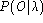

Next: 13.13.3 Tracing
Up: 13.13 HRest
Previous: 13.13.1 Function
HREST is invoked via the command line
HRest [options] hmm trainFiles ...
This causes the parameters of the given hmm to be
re-estimated repeatedly using the data in trainFiles
until either a maximum iteration limit is reached
or the re-estimation converges.
The HMM definition can be contained within one or more macro
files loaded via the standard -H option. Otherwise, the
definition will be read from a file called hmm.
The list of train files
can be stored in a script file if required.
The detailed operation of HREST is controlled by the following
command line options
- -c f
- Set the threshold for tied-mixture observation
pruning to f.
When all mixtures of all models are tied to create a full
tied-mixture system, the calculation of output probabilities
is treated as a special case. Only those
mixture component probabilities which fall within f of
the maximum mixture component probability are used in calculating
the state output probabilities (default 10.0).
- -e f
- This sets the convergence factor to the real value f.
The convergence factor is the relative change between successive
values of  (default value 0.0001).
- -i N
- This sets the maximum number of re-estimation cycles
to N (default value 20).
- -l s
- The string s must be the name of a
segment label. When this option is used, HREST searches
through all of the training files and cuts out all segments with
the given label. When this option is not used, HREST assumes that
each training file is a single token.
- -m N
- Sets the minimum number of training examples to be N.
If fewer than N examples are supplied then an error is
reported (default value 3).
- -t
- Normally, training sequences are rejected if they
have fewer frames
than the number of emitting states in the HMM. Setting this
switch disables this reject mechanism
 .
.
- -u flags
- By default, HREST updates all
of the HMM parameters,
that is, means, variances, mixture weights
and transition probabilities. This
option causes just the parameters indicated by the flags
argument to be updated, this argument is a string containing one
or more of the letters m (mean), v (variance),
t (transition) and w (mixture weight). The presence of a
letter enables the updating of the corresponding parameter set.
- -v f
- This sets the minimum variance (i.e. diagonal element of
the covariance matrix) to the real value f. This is ignored
if an explicit variance floor macro is defined. The default value
is 0.0.
- -w f
- Any mixture weight or discrete observation probability
which falls below the global
constant MINMIX is treated as being zero.
When this parameter is set, all mixture weights are floored
to f * MINMIX.
- -B
- Output HMM definition files in binary format.
- -F fmt
- Set the source data format to fmt.
- -G fmt
- Set the label file format to fmt.
- -H mmf
- Load HMM macro model file mmf. This option
may be repeated to load multiple MMFs.
- -I mlf
- This loads the master label file mlf. This option
may be repeated to load several MLFs.
- -L dir
- Search directory dir for label files (default
is to search current directory).
- -M dir
- Store output HMM macro model files in the directory dir.
If this option is not given, the new HMM definition will overwrite
the existing one.
- -X ext
- Set label file extension to ext
(default is lab).
HREST also supports the standard options -A,
-C, -D, -S, -T, and -V as described
in section 4.4.
Next: 13.13.3 Tracing
Up: 13.13 HRest
Previous: 13.13.1 Function
ECRL HTK_V2.1: email support@entropic.com